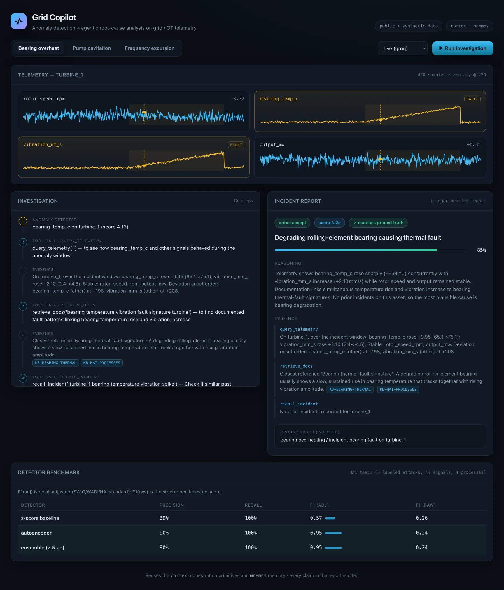

Grid Copilot
An anomaly detector tells you something broke. This one tells you why, and cites its evidence.

Problem
Detection on grid telemetry stops at the alert. An operator still has to reconstruct what happened from raw signals, equipment manuals, and whatever they remember about that asset.
Approach
A streaming detector flags the anomaly. An agent then investigates it, pulling evidence from the telemetry window, from equipment and protocol documentation, and from memory of prior incidents on the same asset, and writes a root-cause report where every claim is cited. It runs entirely on public data (the HAI ICS dataset), and reuses Cortex for orchestration and mnemos for per-asset memory.
Result
A multivariate autoencoder lifts detection F1 from 0.57 to 0.95 at full recall on real ICS attacks. The eval harness scores both halves separately: detection by point-adjusted F1, root-cause quality by LLM-as-judge. A React dashboard runs over a live FastAPI and SSE backend.